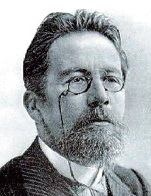

Anton Çehov (1860-1904) edebiyatta kısa hikâyenin büyük ustalarından ve en iyi oyun yazarlarından biriydi. Dönüm noktası olan çeşitli oyunlarında ve başyapıt niteliğindeki sayısız kısa düz yazı eserinde, günlük hayattan dikkate değer hikâyeler bulup çıkardı. Eserleri büyük ölçüde ciddi bir atmosfere sahip olmasına rağmen, komedi ile trajedi arasında gerili bir ipte sürekli olarak gidip gelirler.

Çehov Rusya’nın güneyinde, yüklü miktarda borcu olan ve toprak köleliğinden sadece bir kuşak önce kurtulmuş bir ailede dünyaya geldi. Moskova’da bir tıp öğrencisi olarak, ailesini desteklemek üzere, yüzlercesini farklı yazar isimleri altında sattığı, kısa komik yazılar yazdı. 1884’te tıp eğitimini tamamladıktan sonra yazmaya devam etti ve yirmili yaşlarının sonlarında kendisini takip eden büyük bir hayran kitlesi oluştu. Çehov gitgide hatırı sayılır konuların üstesinden gelip ilk piyes denemelerini de yaptıkça, edebiyat eleştirmenlerinin dikkatini çekmeye başladı.
Çehov’un Martı (1896) eserinin bugün artık bir efsane olan St. Petersburg prömiyeri, o günlerde tam anlamıyla bir felaketti. Oyun yanlışlıkla komedi olarak tanıtılmıştı ve izleyiciler ıslıklamaya başladığında Çehov utanç içinde tiyatrodan kaçtı. Bu, onun için neredeyse piyes yazarlığını bırakmaya neden olacak bir tecrübeydi. Ancak Martı’nın sonraki temsilleri iyi karşılandı ve Çehov vasat sayılan erken dönem oyunlarından birini tekrar ele alarak sıra dışı “Vanya Dayı” (1897) oyununu ortaya çıkardığında bir başarıya daha imza atmış oldu. Bunu aynı zamanda trajikomik başyapıtları olarak görülen “Üç Kız Kardeş” (1901) ve “Vişne Bahçesi” (1904) takip etti. Bu oyunlar sahne sanatları asgari düzeyde tutularak kuşak çatışmaları ve diğer aile sorunlarını sergiliyordu. En önemli olaylar sahne dışında bırakılıyor, aksiyondan ziyade diyalogla iletiliyordu.
Çehov en çok oyunları ile tanınmasına rağmen, kısa hikâyeleri de göz kamaştırıcı ve eşsizdir. Keskince gözlemlenmiş gerçekliğin melankoli düzleminde gelişen, günlük hayatlarının yavanlığı ve saçmalığı içinde kendine acıma batağına saplanmış karakterlerle dolu hikâyelerdir bunlar. Hikâyelerin olay örgüsü en önemli unsurların yüzeyin altında saklanmasıyla ve kısmen ya da tamamen çözümsüz bir sonla oluşturulur. Bu bakımdan, genelde minimal ve yanlış sonuca götürecek denli basittir. Çehov’un, sayıları iki yüzü aşan kısa hikâyeleri, günümüzün önde gelen edebiyat türlerinden biri olan kısa hikâyenin kurulmasında tamamlayıcı rol oynamıştır.
EK BİLGİLER:
1. Çehov yazı kariyerinin doruklarında bile doktorluk yapmaya devam etti. İyi bilinen bir nüktesinde,“Tıp nikahlı eşimdir ve edebiyat metresimdir; birinden sıkıldığımda, geceyi diğeriyle geçiririm.” der.
2. Çehov’un oyunları 1920’lerde İngilizceye çevrilmelerinin hemen akabinde hem İngiltere hem de Amerikan tiyatrosunda kıstas oldu. Halen yaygın biçimde sahnelenmekteler.
3. Rus eleştirmenleri ve entelektüelleri Çehov’a eserlerini daha siyasi yazması için sık sık baskı yaptılar. Çehov ise eserini siyasileştirmenin onun evrensellik değerini düşüreceğine inandığından bu teklifi daima reddetti.